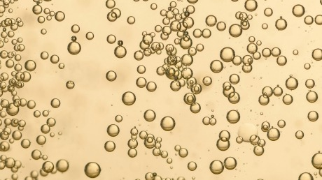
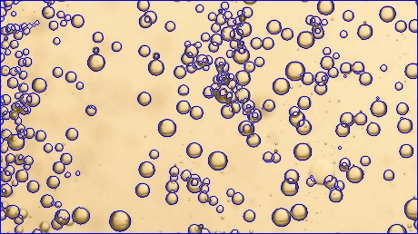

Analyzed wine quality by images and videos using knowledge in computer vision.
Acquired data including bubble count, density, and speed using libraries in OpenCV.
Studyed the algorithms for detecting face pores from research paper and utilized them on wine blobs detection
Implemented blob tracking to videos.

A sample image with wine bubbles

A sample image with wine bubbles after computing the contoursBlobs tracing using HoughCircleBlobs tracing using minEnclosingCircle